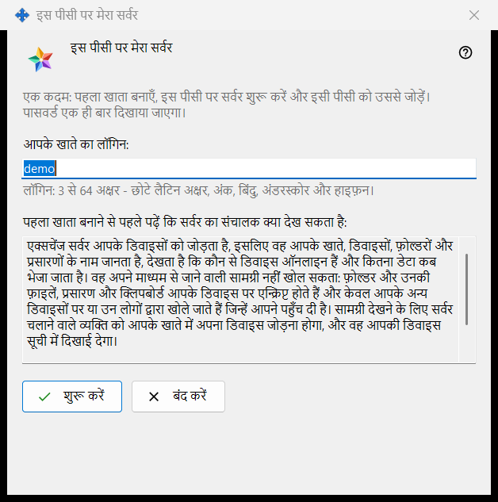
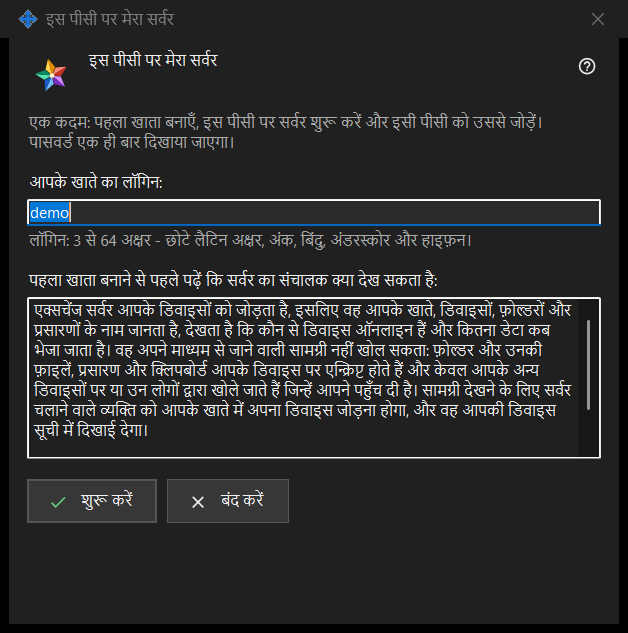

इस पीसी पर मेरा सर्वर
यह किस लिए है
एक ही बार में इस पीसी पर निजी Media Exchange Server सेट करता है: यह पहला खाता बनाता है, सर्वर शुरू करता है और इसी पीसी को उससे जोड़ देता है। यह विंडो Share Manager की सेटिंग के Media Exchange Server पेज के इस पीसी को मेरे सर्वर के रूप में उपयोग करें.. बटन से खुलती है; यह बटन तभी दिखता है जब इस पीसी पर कोई सर्वर सेट न हो।


इस क्रम में
- आपके Windows यूज़र नाम से लिया गया सुझाया हुआ लॉगिन जाँचें, या अपना लॉगिन लिखें।
- वह कथन पढ़ें जो बताता है कि संचालक क्या देख सकता है।
- शुरू करें दबाएँ और चारों चरण पूरे होने तक प्रतीक्षा करें।
- पासवर्ड तुरंत कॉपी करें, फिर अपने दूसरे डिवाइसों के लिए फ़िंगरप्रिंट या कनेक्शन स्ट्रिंग कॉपी करें।
- बंद करें दबाएँ।
तत्व
लॉगिन
आपके खाते का लॉगिन फ़ील्ड में 3 से 64 वर्ण लिखे जा सकते हैं: छोटे लैटिन अक्षर, अंक, बिंदु, अंडरस्कोर और हाइफ़न; बड़े अक्षर अपने-आप छोटे अक्षरों में बदल जाते हैं। फ़ील्ड के नीचे का संकेत तब तक चेतावनी के रंग में रहता है जब तक लिखा हुआ पाठ लॉगिन नहीं हो सकता, और तब तक शुरू करें कुछ नहीं करता।
संचालक क्या देख सकता है
केवल-पढ़ने योग्य बॉक्स (उसके ऊपर की पंक्ति: पहला खाता बनाने से पहले पढ़ें कि सर्वर का संचालक क्या देख सकता है) बताता है कि सर्वर का संचालक खातों, डिवाइसों, फ़ोल्डरों, प्रसारणों और क्लिपबोर्ड के बारे में क्या देख सकता है, सर्वर क्या नहीं पढ़ सकता, और लॉग कितने दिन रखे जाते हैं। अपने सर्वर पर संचालक आप ही हैं।
चरण और विफलताएँ
शुरू करें चार चरण चलाता है और मौजूदा चरण का नाम दिखाता है: खाता बनाया जा रहा है.., सर्वर शुरू किया जा रहा है.., प्रमाणपत्र जाँचा जा रहा है.. और यह पीसी जोड़ा जा रहा है..। इस दौरान लॉगिन लॉक रहता है और विंडो बंद नहीं की जा सकती। यदि कोई खाता नहीं बना, तो एक वाक्य कारण बताता है, उदाहरण के लिए: यह खाता पहले से मौजूद है - कोई दूसरा लॉगिन चुनें। लॉगिन ठीक करें और शुरू करें फिर दबाएँ।
परिणाम और पते
सफल होने पर विंडो यह संदेश दिखाती है: हो गया: सर्वर चल रहा है, खाता बन गया है और यह पीसी उससे जुड़ गया है। साथ में ये पंक्तियाँ सूचीबद्ध होती हैं: इस पीसी के लिए पता, दूसरे डिवाइसों के लिए पता (जब तक यह पता तय नहीं होता, इसमें सेट नहीं है - इसे एक्सचेंज सर्वर की सेटिंग में दर्ज करें लिखा रहता है), लॉगिन, पासवर्ड (एक ही बार दिखाया गया) और प्रमाणपत्र का फ़िंगरप्रिंट। दूसरे डिवाइसों के लिए पता तय होते ही कनेक्शन स्ट्रिंग भी जुड़ जाती है। यदि सर्वर शुरू नहीं हुआ, तब भी खाता बना रहता है और उसका पासवर्ड नीचे एक बार दिखाया जाता है।
पासवर्ड और कॉपी करना
पासवर्ड छिपा रहता है। पासवर्ड दिखाएँ उसे प्रकट करता है; पासवर्ड कॉपी करें उसे सुरक्षित रास्ते से क्लिपबोर्ड पर रखता है, जिससे वह Windows के क्लिपबोर्ड इतिहास और क्लाउड क्लिपबोर्ड से बाहर रहता है। विंडो उसे केवल यही एक बार दिखाती है, जब तक इस पीसी पर खातों के पासवर्ड सहेजें चालू न हो। फ़िंगरप्रिंट कॉपी करें और स्ट्रिंग कॉपी करें सामान्य कॉपी हैं: इनमें से किसी में पासवर्ड नहीं होता। दूसरे डिवाइसों को पता, लॉगिन, पासवर्ड और फ़िंगरप्रिंट चाहिए; पहले कनेक्शन पर वे फ़िंगरप्रिंट का मिलान करते हैं।
बंद करना
यदि पासवर्ड न कॉपी किया गया, न दिखाया गया और न इस पीसी पर सहेजा गया, तो बंद करें पूछता है: पासवर्ड कॉपी किए बिना बंद करें? डिफ़ॉल्ट उत्तर नहीं है, क्योंकि पासवर्ड दोबारा नहीं दिखाया जा सकता, केवल रीसेट किया जा सकता है।
प्रबंधक सेटिंग · SFTP साझाकरण सेटिंग · एक्सचेंज सर्वर सेटिंग